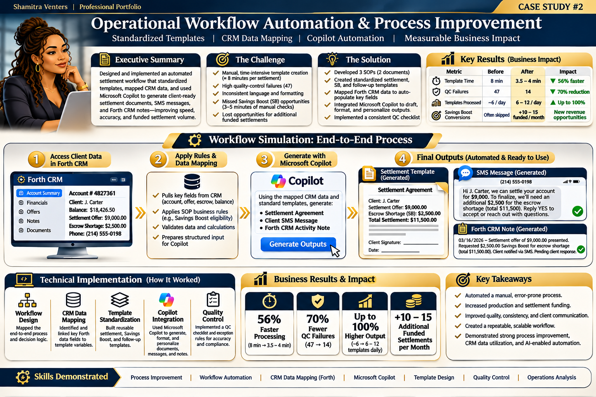

Anonymized professional project + fictional output simulation
Executive summary
This case study describes an independently developed, repeatable workflow for preparing settlement terms for internal QC and creditor review, alongside savings-boost SMS drafts and CRM activity notes. It combines structured operating procedures, CRM field mapping, business-rule checks, and Microsoft Copilot-assisted drafting. Reported operating outcomes include shorter preparation time, fewer quality-control failures, and additional funded settlements associated with savings-boost outreach. The public examples are fictional reconstructions, not employer records.
Business problem 1 — Manual settlement template preparation
Settlement templates were manually populated from the Forth CRM screen. This created recurring errors in the number of scheduled payments, individual payment amounts, creditor payment instructions, and credit account information. Each error required correction or rework and could lead to a quality-control failure. I identified the relevant source fields in Forth and mapped each one to its corresponding location in the settlement template. This structured approach reduced manual transcription and avoided errors that could trigger internal QC failures or creditor rejection, improved the consistency and accuracy of settlement documentation, and supported faster preparation and greater productivity.
Business problem 2 — No standardized savings-boost SMS
There was no consistent SMS template for requesting additional client funds when the escrow balance was insufficient to accept a settlement offer. Drafting these requests manually required extra steps and time, and the message format varied. I applied the same Forth CRM data-mapping approach to generate a standardized, account-specific SMS. The message identified the additional funds needed and gave the client two options: contribute the shortfall as a lump sum or through installments, subject to the settlement deadline and applicable requirements. This made savings-boost outreach faster, clearer, and more repeatable.
Technical implementation
1. Map Forth CRM fields into the settlement terms template: original creditor/account reference, verified balance, negotiated offer, payment count, installment breakdown, payment method, and creditor instructions. 2. Validate that the installment breakdown sums to the offer and check source values before QC/creditor submission. 3. For savings-boost outreach, map the client first name, original creditor and last four account digits, verified balance, offer amount, and payment count. 4. Derive the requested boost from the Forth error-box amount plus $10, rounded to the nearest $10; derive the outreach deadline from the error-box date minus seven days. 5. Generate two installment alternatives by dividing the boost by two and three, with currency rounding and reconciliation checks. 6. Use a structured Copilot prompt to draft a client SMS and a separate Forth note; include copy controls, and have a person verify the results before use. The webpage demonstrates copy controls, not an actual Forth or Copilot integration.
Visual workflow simulation

Conceptual illustration; fictional values, no live CRM connection.
Illustrative scenario and validation
Fictional account: Harbor Point Visa ****4821. Verified balance: $12,000.00. Settlement offer: 45% × $12,000.00 = $5,400.00. Settlement schedule: 12 × $450.00 = $5,400.00. Separately, a simulated Forth error box shows a $140 funding shortfall and a 2/23/2027 deadline. Under the described savings-boost rule, the requested amount is $150 ($140 + $10, rounded to the nearest $10), and the outreach deadline is 2/16/2027 (seven days earlier). The fictional current escrow balance is $5,250; adding the $150 savings boost yields $5,400, equal to the settlement offer. The boost is intended to fund escrow toward the settlement; it is not an additional creditor charge. Example installments: 2 × $75 = $150 or 3 × $50 = $150. These are independent fictional illustration inputs, not a representation of an actual client account.
Simulated output 1 — Settlement terms template (QC and creditor review)
NOT A CLIENT COMMUNICATION — FICTIONAL EXAMPLE
CREDITOR ACCOUNT #: XXXX4821 CREDITOR REF #: DEMO-7842159 ACCOUNT BALANCE: $12,000.00 SETTLEMENT OFFER: $5,400.00 (45% of balance) TERM: 12 months PAYMENT BREAKDOWN: 12 × $450.00 = $5,400.00 PAYMENT METHOD: Direct payment (illustrative) PAYMENT ADDRESS: Pending verification CHECK ADDRESS: Pending verification CONTACT INFO: Pending verification REVIEW STATUS: Draft — internal QC and creditor acceptance pending
The settlement template is prepared for internal QC and creditor review/acceptance. Payment counts, individual payments, totals, creditor instructions, and account identifiers must reconcile; incorrect terms may be returned for correction.
Simulated output 2 — SMS
Fictional client-facing savings-boost draft, subject to verification and applicable communication requirements.
Hi Jordan, We’re actively negotiating your Harbor Point Visa account ending 4821 and have an opportunity to settle it quickly. To help secure the offer, your escrow account needs an additional $150 in drafts between now and 2/16/2027. A lump sum or installments will work (2 × $75 or 3 × $50), subject to the funding deadline. Your current escrow balance is $5,250, leaving a $150 funding gap against the $5,400 settlement offer. ACCT: Harbor Point Visa ****4821 BALANCE: $12,000.00 CURRENT ESCROW: $5,250.00 OFFER: $5,400.00 PAID OFF OVER 12 PAYMENT(S) INSTALLMENT OPTIONS: 2 × $75 -OR- 3 × $50 Let us know if you’d like us to schedule this boost and move forward—or we can continue building funds and revisit the negotiation later. For questions, contact the servicing team through your verified account channel.
Simulated output 3 — Forth CRM note
Fictional standardized note; review before entering into Forth CRM.
$150 SAVINGS BOOST REQUESTED VIA SMS, LUMPSUM OR INSTALLMENTS OK BETWEEN NOW & 2/16/2027.
Quality-control and exception handling
Confirm settlement offer equals the intended percentage of the verified balance; verify payment breakdown totals the offer; validate original creditor identity, account suffix, payment instructions and review status. For savings boosts, verify the error-box amount and date, the extra $10 and rounding rule, the seven-day date adjustment, and that each installment option totals the request. If the requested amount cannot be divided into equal cent-accurate installments, adjust the final installment and disclose the exact amounts rather than showing an incorrect total. Verify authorized contact channel and applicable communication requirements. Human review is required before sending the SMS or recording the note.
Reported results and measurement boundaries
Preparation time improved from approximately 8 minutes to 3.5–4 minutes per template (a 50%–56.25% reduction in time). In one reported 30-day comparison, quality-control failures decreased from 47 to 14 (about 70.2% fewer failures). Typical throughput was reported as 6–12 templates per workday; no verified before-period throughput baseline is available. Savings-boost outreach was associated with approximately 10–15 additional funded settlements monthly. These observations are not controlled causal estimates and should not be interpreted as company-wide results.
Recommendations and lessons
Use a version-controlled field dictionary and SOP; require human review before client contact or CRM posting; log exceptions and corrections; track preparation time, QC failure rate with denominators, and funded outcomes over consistent periods; monitor privacy and compliance. The central lesson is that well-designed inputs and validation controls make AI-assisted drafting more reliable.
Skills demonstrated
Operations analysis · CRM data mapping · process design · SOP development · prompt design · Microsoft Copilot-assisted drafting · financial arithmetic · exception management · quality control · performance measurement.
Publication and confidentiality note
This public-facing case study is an anonymized narrative of professional process improvement, paired with independently invented sample data and messages. It does not reproduce employer-owned SOPs, private CRM screens, or actual customer records. The workflow illustration and all example amounts are fictional and internally reconciled. The displayed Copilot-style field rules are a paraphrased public reconstruction, not the original internal prompt.